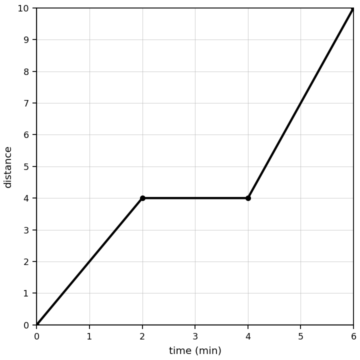
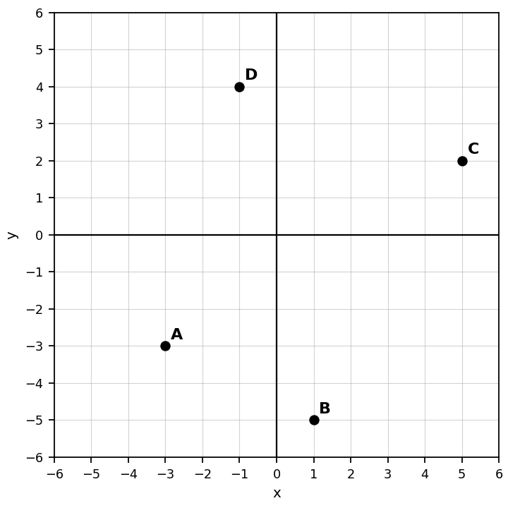

A representation card shows $d=4t+2$. Identify the representation type and name the two quantities that are being related.
A walking graph starts at 2 meters and increases by 4 meters each second. Write an equation that could represent the relationship between time $t$ and distance $d$.
Use the graph to write a possible story. Explain which part of the graph supports each part of your story.

Create a table, equation, graph description, and real-world situation that all represent the same relationship. Then explain how someone could verify that all four representations match.
Compute: $3\dfrac{1}{2}+\left(-4\dfrac{3}{8}\right)$
Compute: $-1\dfrac{1}{4}-\left(-3\dfrac{1}{6}\right)$
Compute: $\left(2\dfrac{5}{9}\right)\left(-\dfrac{3}{7}\right)$
Compute: $-4\dfrac{3}{4}-\left(-\dfrac{5}{7}\right)$
Compute and show how you handled division by a mixed number: $\dfrac{2}{3}\div\left(-1\dfrac{4}{9}\right)$
A square has an area of 225 square units. What is the side length? Then find the area of a square with side length 11 units.
Explain why multiplying two negative numbers results in a positive product. Use a pattern or another valid argument.
A classmate says $-8\dfrac{3}{4}\div\left(-\dfrac{5}{7}\right)$ should be between $-9$ and $0$ because the first number is negative. Decide whether the claim is reasonable and justify your decision without using a calculator.
State whether $(-5,0)$ lies on the $x$-axis, the $y$-axis, or neither.
Use the coordinate plane. Choose two labeled points and write their coordinates.

Explain how the $x$-intercept and $y$-intercept of a graph can help you understand a situation.
Create a context for the point $(6,18)$ on a graph. Explain what the input and output mean and why the point makes sense in your context.